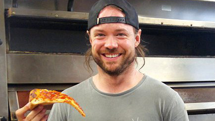
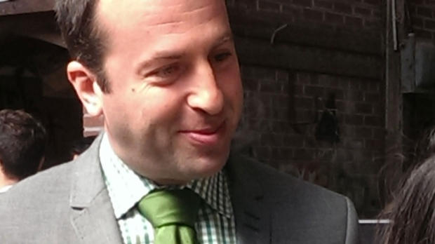
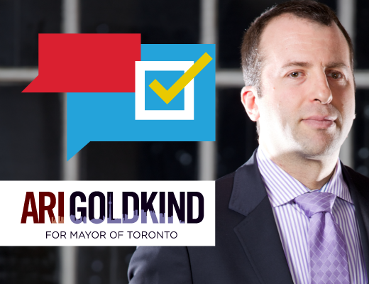
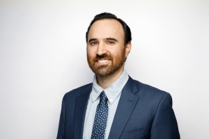

Adam Skelly out on Bail
December 16th, 2020
From December 2nd. Also, I'm skipping ahead to the relevant part.
CTV:
TDC_ARTICLE_START
Skelly was led away in handcuffs and now faces a number of charges, including attempting to obstruct police, mischief under, failing to comply with a continued order under the Reopening Ontario Act, and failing to leave when directed under the Trespass to Property Act.
He appeared in court via video link on Friday and was released after his wife posted $50,000 bail.
Under the conditions of his bail, Skelly must stay 200 metres away from Adamson Barbecue, as well as his two other businesses; He is not to operate a business except in accordance with the Reopening Ontario Act; He must obey the Health Protection Act, as well as all lawful orders by Ontario's Chief Public Health Officer and the Regional Public Health Officer. As well, he must not communicate on social media.
TDC_ARTICLE_STOP

No social media?
I mean, this is clearly a flex by the State-Corporate Complex, but still. Not being allowed to communicate on social media. Yeah, how about go fuck yourself? I'm not a lawyer, but I genuinely question the legality of such a ruling. More importantly, this is the thing that gets judges killed. And by killed I mean deradicalized forcibly.
TDC_ARTICLE_START
"It took so long today because a crown attorney was being advised at a province level on what my bail conditions should be," Skelly told reporters after being released.
"One of those bail conditions is that I'm not allowed to use, communicate, or post on social media. That to me is really interesting. I wonder what it is that the province doesn't want everybody to know."
TDC_ARTICLE_STOP
Adam Skelly
You said it Adam. Very jew-like behaviour from the Ontario State-Corporate Complex.
TDC_ARTICLE_START
Speaking with CP24, criminal lawyer Ari Goldkind said Skelly could face some serious further charges if he continues to defy the law.
“He could be charged with serious crimes that are called ‘fail to comply,’” Goldkind said. “And when you get charged with fail to comply you're taking your jeopardy of these mischief and obstruct charges and you're increasing it greatly.”
Goldkind said the conditions of Skelly’s bail are “significant,” including the stipulation that he not use social media.
TDC_ARTICLE_STOP
Jew Lawyer and Toronto Mayor hopeful Ari Goldkind
Wow this guy, I was a little bit unprepared. He's a jew criminal defense lawyer, who seems to specialize in defending (((men))) accused of sexually assaulting multiple women. He also at one point ran for Mayor of Toronto, and despite being beyond a longshot, managed to get a piece written by the CBC on him. Although honestly it wasn't all that flattering.
CBC:
TDC_ARTICLE_START
Goldkind, a 40-year-old criminal defence lawyer whose client list includes pedophile Gordon Stuckless, likes to portray himself as a candidate more willing than his opponents to speak the truth, particularly when it comes to Toronto's revenue needs.
TDC_ARTICLE_STOP
I mean, I've seen better puff pieces.
Back to the article at hand.
TDC_ARTICLE_START
That charge likely stems from his use of Instagram to announce that he would defy the lockdown orders and invite people to come eat at his restaurant, and his subsequent use of the platform to call for locksmiths and other help to reopen the restaurant after it was shut down by police and public health officials.
“That is a very significant stipend put on him. Remember he's presumed innocent at this stage, even though he's doing it live on national TV,” Goldkind said. “But absolutely from the Crown point of view, they don't want him inciting more, or inviting more people to come down to Adamsons, which is now obviously cordoned off.”
Skelly’s next court appearance is currently scheduled for Jan. 4.
TDC_ARTICLE_STOP
I didn't notice at first, but his eyes don't point the same way. Very inbred.
Yeah, pretty weird how this lowlife Jew Criminal Defence Lawyer who defends pedophiles is being quoted by the propagandist who wrote this piece. So who is that propagandist? Well, none other than (((Joshua Freeman))).
CBC Propagandist Joshua Freeman
Weird. It's like they've got this nepotism thing going on.